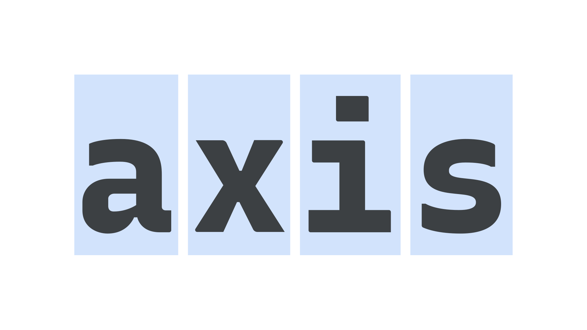

Monospaced
By Google Fonts Knowledge contributors · Google Fonts Knowledge.
Original article · Source on GitHub · CC BY-SA 4.0. Text, illustrations and existing credits reproduced from the licensed Knowledge repository. Open Shelf adapted the layout and links; these adaptations are also CC BY-SA 4.0. No endorsement implied.
Monospaced typefaces are ones in which all or most characters take up the same amount of horizontal space. Code editors use monospaced typefaces by default.

As evidenced on any monospaced typeface (originally produced for typewriters), there are a number of common stylistic touches on common characters to account for this shared width, such as serifs on top of the stem on a lowercase “i,” or a heavily condensed lowercase “m.”
Examples of monospaced typefaces include Courier, Roboto Mono, Inconsolata, Source Code Pro, and IBM Plex Mono.